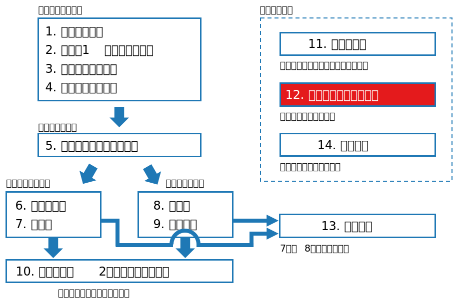

class: middle, center # 数理統計学特論II<br>第6回 ノンパラメトリック法 奥 牧人 (和漢研) 2022/??/?? --- # 前回の復習 前回の目的 * 回帰分析と分散分析を統一的に扱う理論的枠組みを理解すること 前回の達成目標 * 単回帰モデルと重回帰モデルの意味を説明できる。 * 一元配置分散分析の線形モデルとしての解釈を説明できる。 * 正規線形モデルの正準形の意味を説明できる。 * 正準形に基づく回帰分析と分散分析の解釈を説明できる。 --- # 今回の位置付け  --- # 今回の目的と達成目標 目的 * ノンパラメトリック検定の基本的な用語を理解すること 達成目標 * ノンパラメトリック検定の意味を説明できる。 * ウィルコクソンの符号順位検定の意味を説明できる。 * マン・ホイットニーの $U$ 検定の意味を説明できる。 * 漸近相対効率の意味を説明できる。 --- # 予習用キーワードの確認 * マン・ホイットニーの $U$ 検定 --- # Outline 1. ノンパラメトリック法の考え方 2. ノンパラメトリック検定 3. タイのある場合のとり扱い 4. ノンパラメトリック検定から得られる区間推定 5. 並べかえ検定 6. ノンパラメトリック検定の漸近相対効率 --- # Outline 1. **ノンパラメトリック法の考え方** 2. ノンパラメトリック検定 3. タイのある場合のとり扱い 4. ノンパラメトリック検定から得られる区間推定 5. 並べかえ検定 6. ノンパラメトリック検定の漸近相対効率 --- # ノンパラメトリック法 * 正規分布はパラメータ $\mu$ と $\sigma^2$ で形が決まる。 * 母集団分布として正規分布などの特定の分布形を仮定できない<br>とき、ノンパラメトリック法を使う。 * 例、極端な外れ値が含まれる場合など * ノンパラメトリック検定では、母集団分布の形によらず有意水準が保証される。 * 一方、母集団分布が正規分布のときは、ノンパラメトリック検定は正規分布用の検定よりも検出力が低い。 --- # Outline 1. ノンパラメトリック法の考え方 2. **ノンパラメトリック検定** 3. タイのある場合のとり扱い 4. ノンパラメトリック検定から得られる区間推定 5. 並べかえ検定 6. ノンパラメトリック検定の漸近相対効率 --- # 問題設定 * $1$ 標本問題: $X_1,\ldots,X_n\stackrel{i.i.d.}{\sim}F$ * 累積分布関数 $F$ は連続とし、$0<F(x)<1$ となる全ての $x$ において $f(x)=F'(x)>0$ と仮定する。 * このとき $F(\xi)=1/2$ となる中央値 $\xi$ が一意に定まる。 * 両側検定 $$H_0:\xi=\xi_0\quad\mathrm{vs.}\quad H_1:\xi\neq\xi_0$$ * 片側検定 $$H_0:\xi\leq\xi_0\quad\mathrm{vs.}\quad H_1:\xi>\xi_0$$ --- # 符号検定 * 実用的でない検定だが、説明のために紹介 * $X_1,\ldots,X_n$ のうち $\xi_0$ 以上の個数を $T$ とする。 * $H_0$ のもとで $T\sim\mathrm{Bin}(n,1/2)$ のはずなので、両側検定は $$\left|T-\frac{n}{2}\right|>c\quad\Rightarrow\quad\mathrm{reject}$$ * 片側検定も同様 * 符号検定という名前の由来 ($X_i=\xi_0$ が無い場合) <div>$$\sum_{i=1}^n\mathrm{sign}(X_i-\xi_0)=2T-n$$</div> --- # ウィルコクソンの符号順位検定 * $F$ が $0$ に関して対称な分布であると仮定する。 * 対称とは限らない $F'$ に従う対応あり $2$ 標本問題の差の検定を $1$ 標本問題に帰着させる場合は成立 * $\xi_0=0$ とする。 * $|X_1|,\ldots,|X_n|$ が全て異なるとして、小さい順に並べ $1$ から $n$ までの順位をつけたときの $X_i$ の順位を $R_i$ とおく。 * 変数 $\varepsilon_i$ を、 $X_i>0$ のとき $1$, $X_i\leq 0$ のとき $0$ とする。 * 検定統計量 $$W=\sum_{i=1}^n\varepsilon_iR_i$$ --- # 例 * 標本 $$(x_1,x_2,x_3)=(-2.5,4.1,0.5)$$ * 絶対値を取り、小さい順に並べる $$|0.5|<|-2.5|<|4.1|$$ * 順位を割り当てる $$(R_1,R_2,R_3)=(2,3,1)$$ * $x_i$ の符号が正のもののみの順位を足す $$W=R_2+R_3=4$$ --- # 検定統計量 $W$ の標本分布 * $|X_1|,\ldots,|X_n|$ を固定したとき、$\varepsilon_1,\ldots,\varepsilon_n\stackrel{i.i.d.}{\sim}\mathrm{Bin}(1,1/2)$ * この条件下で $W$ の分布は以下の $\tilde W$ の分布と同じ $$\tilde W=\sum_{i=1}^ni\varepsilon_i$$ * これが $|X_1|,\ldots,|X_n|$ に依存しないので、条件つきでない $W$ の分布も同じ * $n$ が小さいときは $\\{0,1\\}^n$ の全パターンを計算すれば良い。 * $n$ が大きいときは正規分布近似を用いる $$W\stackrel{\cdot}{\sim}N\left(\frac{n(n+1)}{4},\frac{n(n+1)(2n+1)}{24}\right)$$ --- # $W$ の平均と分散の計算 * 公式 <div>$$\sum_{k=1}^nk=\frac{n(n+1)}{2},\quad \sum_{k=1}^nk^2=\frac{n(n+1)(2n+1)}{6}$$</div> * 平均 $$E[W]=\sum_{i=1}^n\frac{i}{2}=\frac{n(n+1)}{4}$$ * 分散 <div>$$V[W]=\sum_{i=1}^nV[i\varepsilon_i]=\sum_{i=1}^n\frac{i^2}{4}=\frac{n(n+1)(2n+1)}{24}$$</div> --- # 対応あり $2$ 標本問題からの帰着 * 帰無仮説において $X,Y\sim F'$ とする。$F'$ は対称とは限らない。 * $Z=Y-X$ とおくと、$Z$ と $-Z=X-Y$ は同じ分布 * 従って、$Z$ の分布は対称となり、ウィルコクソンの符号順位検定が適用出来る。 --- # ノンパラメトリック検定の呼び名 * $1$ 標本 * ウィルコクソンの符号順位検定 * ウィルコクソン検定 * ウィルコクソンの符号順位和検定 * $2$ 標本 (対応なし) * マン・ホイットニーの $U$ 検定 * ウィルコクソン・マン・ホイットニー検定 * ウィルコクソンの順位和検定 --- # マン・ホイットニーの $U$ 検定 * 対応のない $2$ 標本問題 (分布の形は同じだと仮定) $$X_1,\ldots,X_m\stackrel{i.i.d.}{\sim} F(x),\quad Y_1,\ldots,Y_n\stackrel{i.i.d.}{\sim}F(y-\Delta)$$ * 両側検定問題 (片側検定も同様) $$H_0:\Delta=0\quad\mathrm{vs.}\quad H_1:\Delta\neq 0$$ * $X$, $Y$ の各値を並べたもの <div>$$(Z_1,\ldots,Z_{m+n})=(Y_1,\ldots,Y_n,X_1,\ldots,X_m)$$</div> * 検定統計量 ($Z_i$ の順位を $R_i$ とした) <div>$$W=\sum_{i=1}^n R_i$$</div> --- # 例 * 標本 $$(x_1,x_2,x_3)=(0.5,1.2,2.5),\quad (y_1,y_2)=(1.0,2.1)$$ * 両方混ぜて小さい順に並べる $$0.5<1.0<1.2<2.1<2.5$$ * 順位を割り当てる $$(R_1,R_2,R_3,R_4,R_5)=(2,4,1,3,5)$$ * $y$ に関する順位のみを足す $$W=R_1+R_2=6$$ --- # 検定統計量 $W$ の標本分布 * $m+n$ 個の中から $n$ 個を選ぶ組み合わせの数 $$\left(\begin{array}{c}n+m\\\\n\end{array}\right)$$ * 帰無仮説のもとではどのパターンも同様に確からしい。 * $m+n$ が小さいときは全パターンを計算すれば良い。 * $m+n$ が大きいときは正規分布近似を用いる $$W\stackrel{\cdot}{\sim}N\left(\frac{n(m+n+1)}{2},\frac{mn(m+n+1)}{12}\right)$$ --- # 非復元抽出と有限修正 * 一般に、平均 $\mu$、分散 $\sigma^2$、サイズ $N$ の母集団から $n$ 個を非復元抽出したとき、標本平均 $\bar X$ について以下が成り立つ $$E[\bar X]=\mu,\quad V[\bar X]=\frac{N-n}{N-1}\frac{\sigma^2}{n}$$ * 分散の係数 $(N-n)/(N-1)$ を有限修正という。 * これを当てはめると、母集団は $\\{1,\ldots,m+n\\}$ なので、$N=m+n$ とおくと <div>$$\mu=\frac{1}{N}\sum_{i=1}^N i=\frac{N+1}{2},\quad\sigma^2=\frac{1}{N}\sum_{i=1}^N i^2-\mu^2=\frac{N^2-1}{12}$$</div> --- # 検定統計量 $W$ の平均と分散 * 平均 $$E[W]=E[n\bar X]=n\frac{N+1}{2}=\frac{n(m+n+1)}{2}$$ * 分散 $$\begin{align}V[W]&=V[n\bar X]\\\\&=n^2V[\bar X]\\\\&=n^2\frac{N-n}{N-1}\frac{N^2-1}{12n}\\\\&= \frac{mn(m+n+1)}{12}\end{align}$$ --- # Outline 1. ノンパラメトリック法の考え方 2. ノンパラメトリック検定 3. **タイのある場合のとり扱い** 4. ノンパラメトリック検定から得られる区間推定 5. 並べかえ検定 6. ノンパラメトリック検定の漸近相対効率 --- # タイのある場合 * 観測値に同じ値があるとき、タイ (tie) があるという。 * 中間順位を使うことが多い。 * 例えば、$(10,10,30)$ という観測値に対して、順位を $(1,2,3)$ ではなく $(1.5,1.5,3)$ とする。 * 式で書くと次のようになる <div>$$R_i=\frac{1}{2}+\sum_{j=1}^n\left(I_{[x_j\text{<} x_i]}+\frac{1}{2}I_{[x_j=x_i]}\right)$$</div> * ここで $I$ は定義関数 (指示関数) <div>$$I_A = \left\{\begin{array}{cl}1&\mathrm{if}\quad A\\0&\mathrm{otherwise}\end{array}\right.$$</div> --- # タイのある場合の検定 * 順位が与えられた条件つきの $W$ の分布を用いて検定を行う。 * ウィルコクソンの符号順位検定の検定統計量 (再掲) $$W=\sum_{i=1}^n\varepsilon_i R_i$$ * 条件付き平均 <div>$$E[W\mid R_1,\ldots,R_n]=\frac{1}{2}\sum_{i=1}^nR_i=\frac{n(n+1)}{4}$$</div> * 条件付き分散 (タイの無い場合と一致しない) <div>$$V[W\mid R_1,\ldots,R_n]=\frac{1}{4}\sum_{i=1}^nR_i^2$$</div> --- # Outline 1. ノンパラメトリック法の考え方 2. ノンパラメトリック検定 3. タイのある場合のとり扱い 4. **ノンパラメトリック検定から得られる区間推定** 5. 並べかえ検定 6. ノンパラメトリック検定の漸近相対効率 --- # $1$ 標本問題の区間推定 * ウィルコクソンの符号順位検定と対応する。 * 補助的な変数を導入 $$U_{ij}=\frac{X_i+X_j}{2},\quad 1\leq i\leq j\leq n$$ * $U_{ij}$ を小さい順に並べたときの $k$ 番目を $V_k$ とする。 * 中央値 $\xi$ の信頼区間 <div>$$S(X)=[V_{n(n+1)/4-c},V_{n(n+1)/4+c+1}]$$</div> * $S(X)$ が長さ $0$ のときの値をホッジス・レーマン推定量という <div>$$\hat\xi=\mathrm{med}_{i\leq j} U_{ij}$$</div> --- # $2$ 標本問題の区間推定 * マン・ホイットニーの $U$ 検定と対応する。 * 補助的な変数を導入 $$U_{ij}=Y_j-X_i,\quad i=1,\ldots,m,\quad j=1,\ldots,n$$ * $U_{ij}$ を小さい順に並べたときの $k$ 番目を $V_k$ とする。 * 分布の差 $\Delta$ の信頼区間 <div>$$S(X)=[V_{c},V_{mn-c+1}]$$</div> --- # Outline 1. ノンパラメトリック法の考え方 2. ノンパラメトリック検定 3. タイのある場合のとり扱い 4. ノンパラメトリック検定から得られる区間推定 5. **並べかえ検定** 6. ノンパラメトリック検定の漸近相対効率 --- # 並べかえ検定 * $2$ 標本問題を例に説明する。標本サイズは $m$, $n$ とする。 * $m+n$ 個の観測値を固定し、そこから $n$ 個を選び、任意の統計量 $T$ の値を計算する。 * これを $\left(\begin{array}{c}n+m\\\\n\end{array}\right)$ 通りの全てまたはランダムに選んだ一部に対して行い $T$ の分布を求める。これを $T$ の並べかえ分布という。 * $T$ の並べかえ分布に基づいて検定を行う。 --- # Outline 1. ノンパラメトリック法の考え方 2. ノンパラメトリック検定 3. タイのある場合のとり扱い 4. ノンパラメトリック検定から得られる区間推定 5. 並べかえ検定 6. **ノンパラメトリック検定の漸近相対効率** --- # 漸近相対効率 * 母集団が正規分布のとき、ノンパラメトリクック検定は正規分布用の検定よりも検出力が低い。 * 同じ検出力を得るために、より多くの標本を必要とする。 * 漸近的に $c$ 倍必要なとき、その逆数 $1/c$ を漸近相対効率という。 --- # 問題設定の例 * $F$ を $0$ に関して対称な連続分布の累積分布関数とする。 * $X_1,\ldots,X_n\stackrel{i.i.d.}{\sim}F(x-\xi)$ とする。$\xi$ は対称の中心である。 * 分散 $\sigma^2$ は既知とし、一般性を失わず $\sigma^2=1$ とする。 * 帰無仮説 $$H_0:\xi=\xi_0$$ * 隣接対立仮説 ($\tau>0$) <div>$$H_1^{(n)}:\xi=\xi_{1,n}=\xi_0+\frac{\tau}{\sqrt{n}}$$</div> --- # 標本平均の場合 * $T_n=\bar X$ とおく。 * 中心極限定理より、漸近的に有意水準 $\alpha$ の検定は <div>$$\sqrt{n}(T_n-\xi_0)>z_\alpha\quad\Rightarrow\quad\mathrm{reject}$$</div> * 一方、隣接対立仮説 $H_1^{(n)}$ のもとでは <div>$$\begin{align}\sqrt{n}(T_n-\xi_0)&=\sqrt{n}(T_n-\xi_{1,n}+\xi_{1,n}-\xi_0)\\&=\sqrt{n}(T_n-\xi_{1,n})+\tau\\&\stackrel{d}{\to}N(\tau,1)\end{align}$$</div> * $n\to\infty$ の検出力 ($\Phi$ はガウスの誤差関数) $$1-\Phi(z_\alpha-\tau)$$ --- # 漸近相対効率の定義と例 * 前述の隣接対立仮説のもとで、統計量 $T_n$ を用いた検定と統計量 $S_m$ ($m=cn$) を用いた検定の検出力が $n\to\infty$ で等しくなるように $c$ を決めたとき、$1/c$ を $T_n$ に対する $S_n$ の漸近相対効率とする。 * 例、$\bar X$ に対する漸近相対効率 <table class="table text-center mt-3" style="width:80%"> <tr><th></th><th>$N(0,1)$</th><th>$t(5)$</th><th>$t(3)$</th></tr> <tr><th>符号検定</th><td>$0.637$</td><td>$0.96$</td><td>$1.62$</td></tr> <tr><th>ウィルコクソンの符号順位検定</th><td>$0.955$</td><td>$1.24$</td><td>$1.90$</td></tr> </table> * ただし $t(k)$ は自由度 $k$ の $t$ 分布 --- # まとめ ノンパラメトリック検定の基本的な用語を説明しました。 1. ノンパラメトリック法の考え方<br> <span class="times">!</span> ノンパラメトリック検定の意味を説明できる? 2. ノンパラメトリック検定<br> <span class="times">!</span> ウィルコクソンの符号順位検定の意味を説明できる?<br> <span class="times">!</span> マン・ホイットニーの $U$ 検定の意味を説明できる? 3. タイのある場合のとり扱い 4. ノンパラメトリック検定から得られる区間推定 5. 並べかえ検定 6. ノンパラメトリック検定の漸近相対効率<br> <span class="times">!</span> 漸近相対効率の意味を説明できる? --- # 小テスト * Moodleで小テストに回答して下さい。 * **期限は今週中** (日曜の23:59まで) とします。 * 繰り返し受験して構いません。最高得点で成績をつけます。 --- # 次回の予習用キーワード * 最尤推定量 * 尤度比検定 * 大数の法則 * 中心極限定理